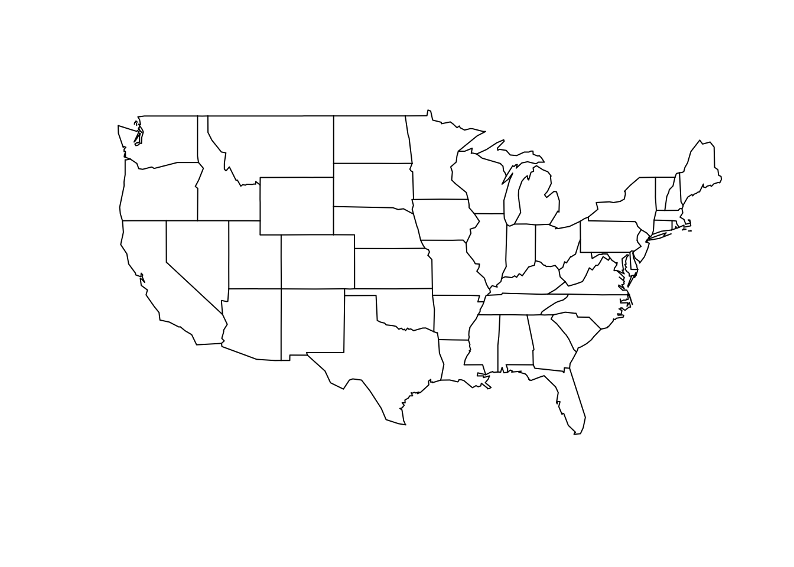
32 Map Projections

A spatial projection is a mathematical representation of a coordinate space used to identify geospatial objects. Because the earth is both non-flat and non-spheroid, we must use mathematical approaches to describe the shape of the earth in a coordinate space. We do this using an ellipsoid—a simplified model of the shape of the earth. Common ellipsoids include:
- NAD27 (North American Datum of 1927) based upon land surveys
- NAD83 based upon satellite data measuring the distance of the surface of the earth to the center of the plant. This is also internationally known as GRS80 (Geodetic Reference System 1980) internationally.
- WGS84 (World Geodetic System 1984) is a refinement of GRS80 done by the US military that was used in the development of GPS systems (and subsequently for all of us).
Onto this ellipsoid, we must define a set of reference locations (in 3-space) called datum that help describe the precise shape of the surface.
32.1 Projections
A projection onto an ellipsoid is a way of converting the spherical coordinates, such as longitude and latitude, into 2-dimensional coordinates we can use. There are three main types of approaches that have been used to develop various projections. (see wikipedia for some example imagery of different projections).
These include:
- Azimuthal: An approach in which each region of the earth is projected onto a plane tangential to the surface, typically at the pole or equator. Cylindrical: This approach projects the surface of the earth onto a cylinder, which is ‘unrolled’ like a large map. This approach ‘stretches’ distances in a east-west fashion, which is why Greenland looks so large…
- Conic: Another ‘unrolling’ approach, though this time instead of a cylinder, it is projected onto a cone.
All projections produce bias in area, distance, or shape (some do so in more than one), so there is no ‘optimal’ projection. To give you an idea of the consequences of these projections, I’ll use the United States map as an example and we can visualize how it is projected onto a 2-dimensional space using different projections.
32.1.1 Equatorial Projections
These are projections centered on the Prime Meridian (Longitude=0)
Mercator Projection
MollWeide Projection
map("state",proj="mollweide")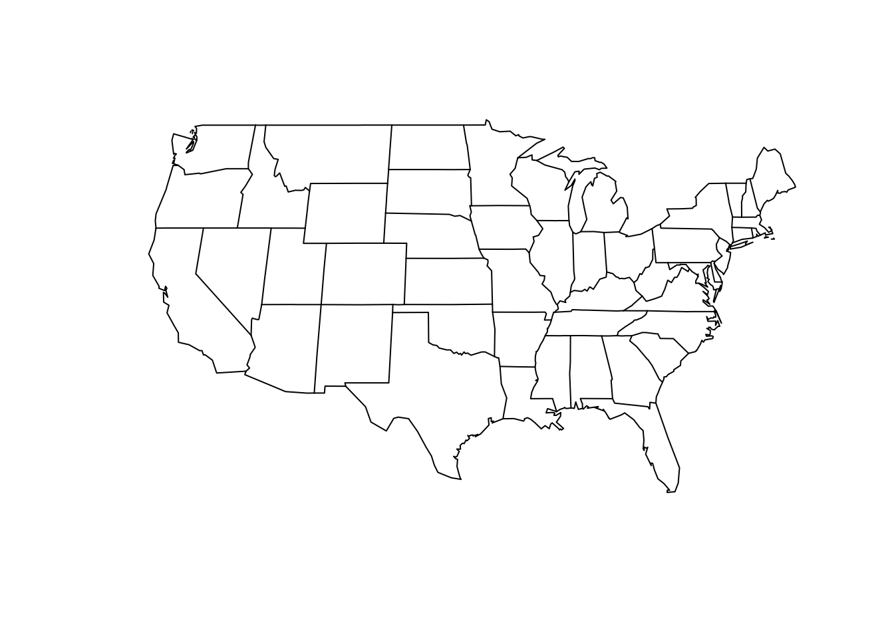
Gilbert Projection
map("state",proj="gilbert")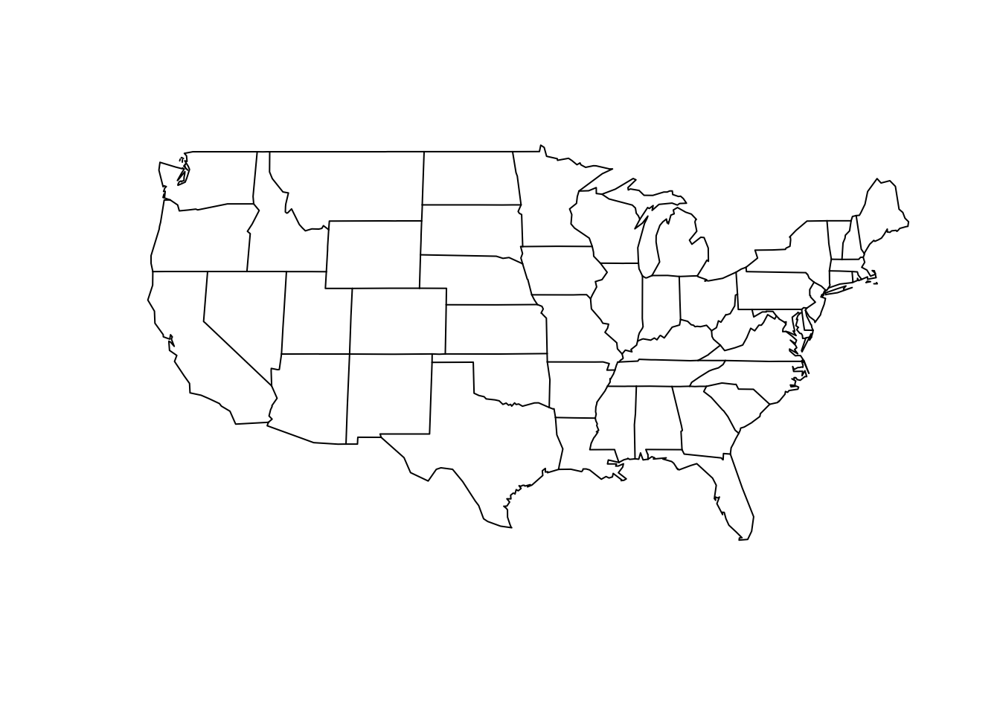
Cylequalarea Projection
Some projections require additional parameters, this one is based upon equally spaced and straight meridians, equal area, and true centered on a particular Latitude. I used the centroid of the US.
map("state",proj="cylequalarea",par=39.83)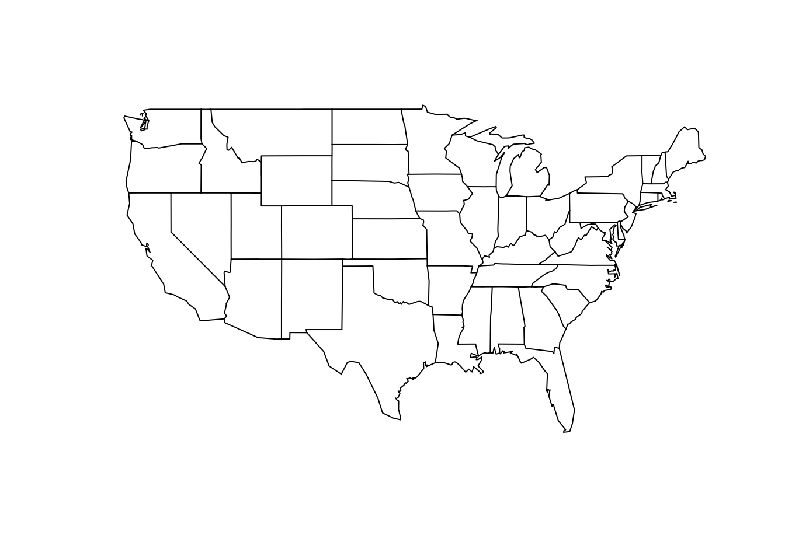
32.1.2 Azimuth Projections
These projections are centered on the North Pole with parallels making concentric circles. Meridians are equally spaced radial lines.
Orthographic Projection
map("state",proj="orthographic")
Stereographic Projection
map("state",proj="orthographic")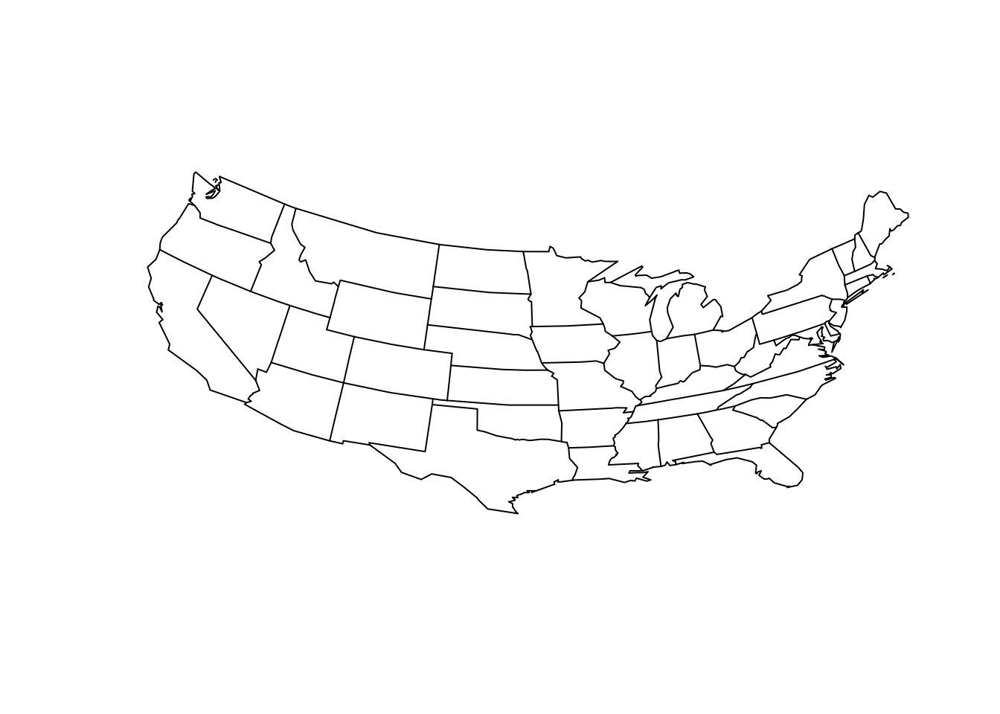
Perspective Projection
Here the parameter is the distance (in earth radii) the observer is looking.
map("state",proj="perspective", param=8)
Gnomonic Projection
map("state",proj="gnomonic")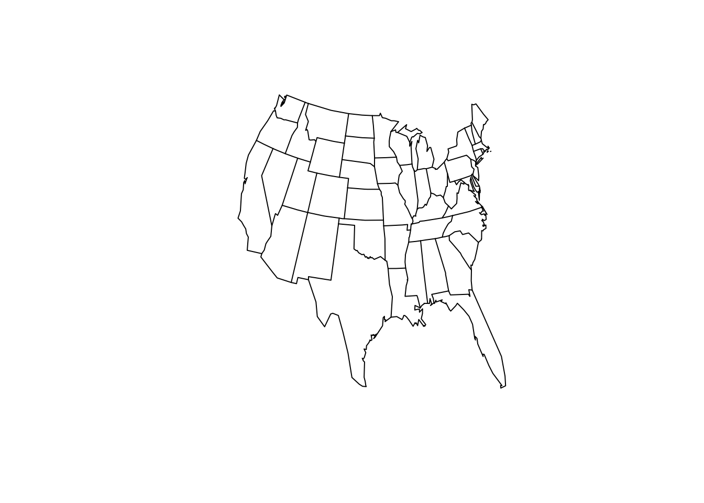
32.1.3 Polar Conic Projections
Here projections are symmetric around the Prime Meridian with parallel as segments of concentric circles with meridians being equally spaced.
map("state",proj="conic",par=39.83)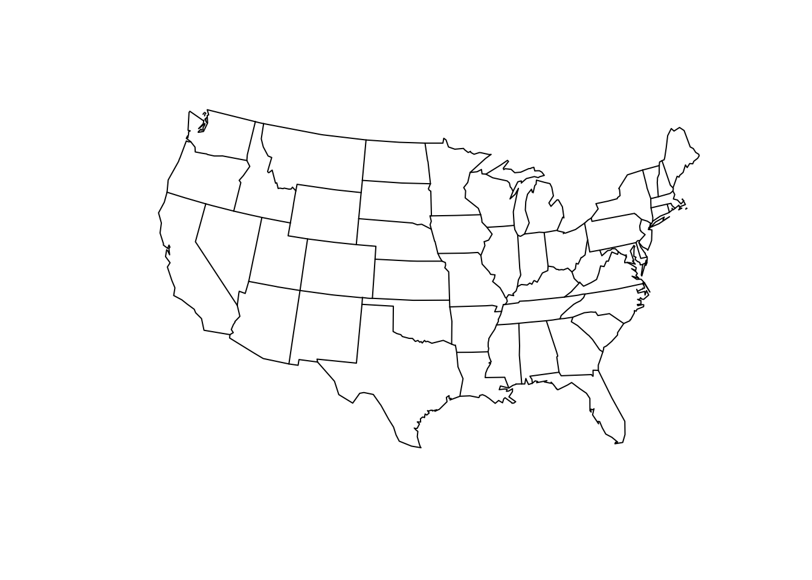
32.1.4 Miscellaneous Projections
Square Projection
map("state",proj="square")Hexagon Projection
map("state",proj="hex")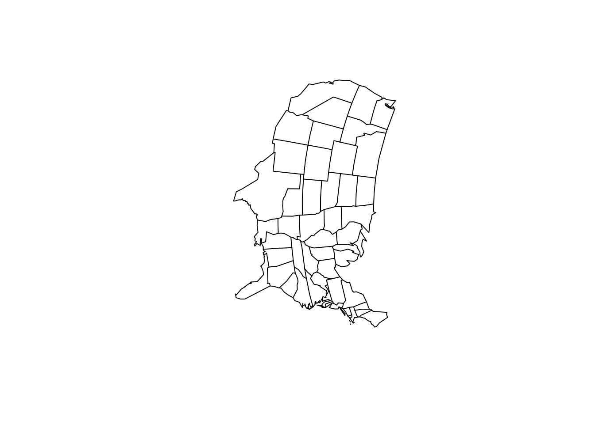
Bicentric Projection
map("state",proj="bicentric", par=-98)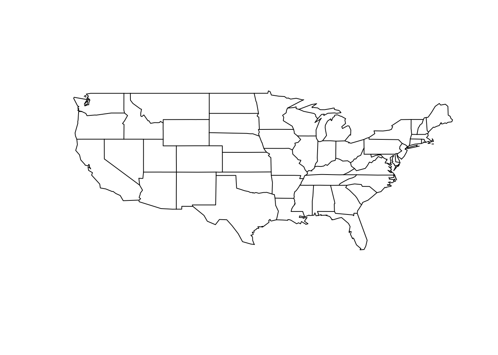
Guyou Projection
map("state",proj="guyou")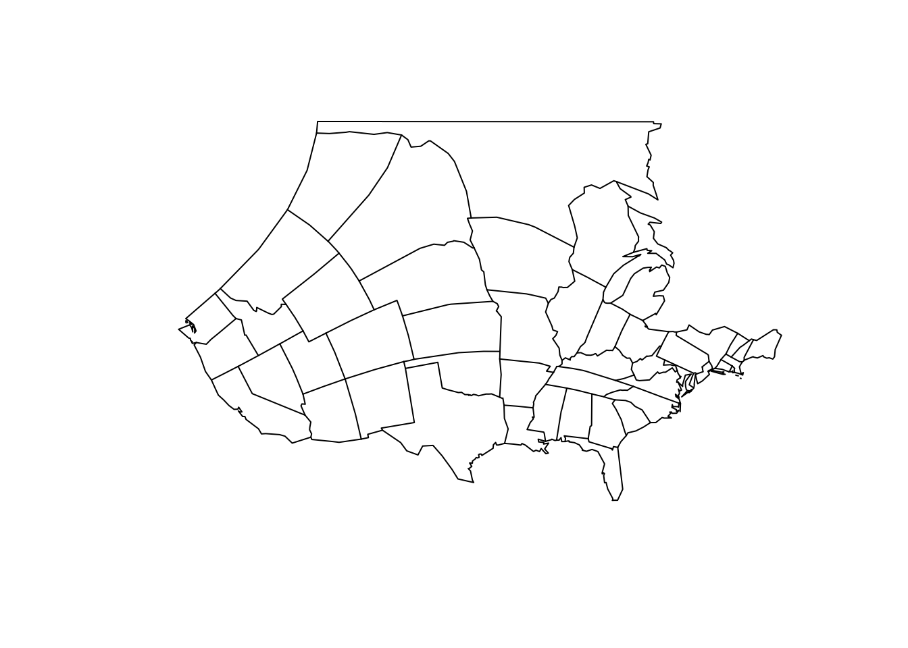
There are a lot of ways to project a 3-dimensional surface onto a 2-dimensional representation. Be aware of what you are using and how you are using it when plotting materials.
32.1.5 Reprojecting Rasters
When working with rasters, we can reproject these onto other projections rather easily. Here is an example from the worldclim elevation tile we used previously (see @ref(cropping-rasters)).
library(raster)
alt <- raster("./spatial_data/alt.tif")
e <- extent( c(-115,-109,22,30) )
baja_california <- crop( alt, e )
baja_californiaclass : RasterLayer
dimensions : 960, 720, 691200 (nrow, ncol, ncell)
resolution : 0.008333333, 0.008333333 (x, y)
extent : -115, -109, 22, 30 (xmin, xmax, ymin, ymax)
crs : +proj=longlat +datum=WGS84 +no_defs
source : memory
names : alt
values : -202, 2263 (min, max)We can now project it to another projection, lets say Lambert Conic Conformal.
library(rgdal)
projection(baja_california)
baja_lcc <- projectRaster( baja_california, crs="+proj=lcc +lat_1=48 +lat_2=33 +lon_0=-100 +ellps=WGS84")
baja_lccThese two projections influence the region as shown below.
32.1.6 Projecting In GGPlot
As usual, there is probably a way to plot these values in ggplot to make the output just a little bit more awesome. Projections of data in ggplot displays can be manipulated by appending a coord_* object to the plot. Here are two examples using a mercator and azimuth equal area projection of the state maps.
library(ggplot2)
states <- map_data("state")
map <- ggplot( states, aes(x=long,y=lat,group=group))
map <- map + geom_polygon( fill="white",color="black")
map <- map + xlab("Longitude") + ylab("Latitude")
map + coord_map("mercator") 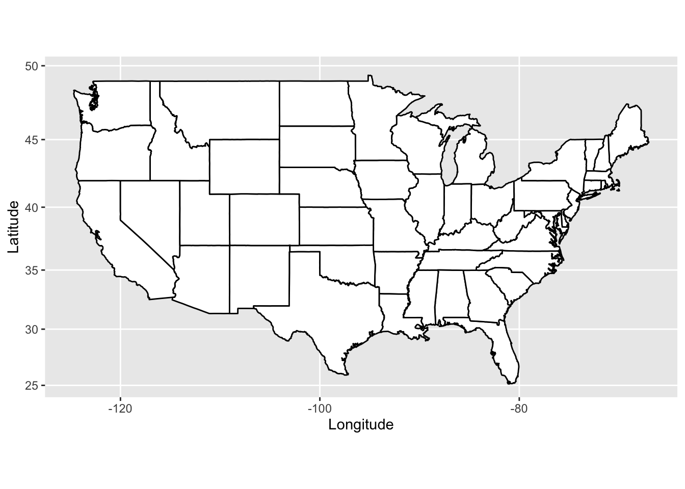
Conversely, we can plot it using the equal area Azimuth projection
map + coord_map("azequalarea")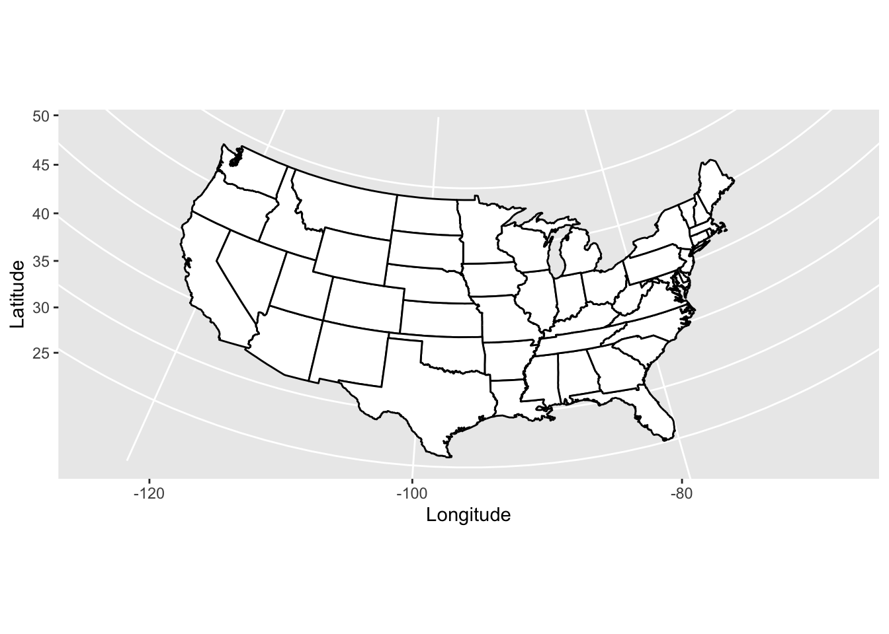
or fisheye
map + coord_map("fisheye",par=3)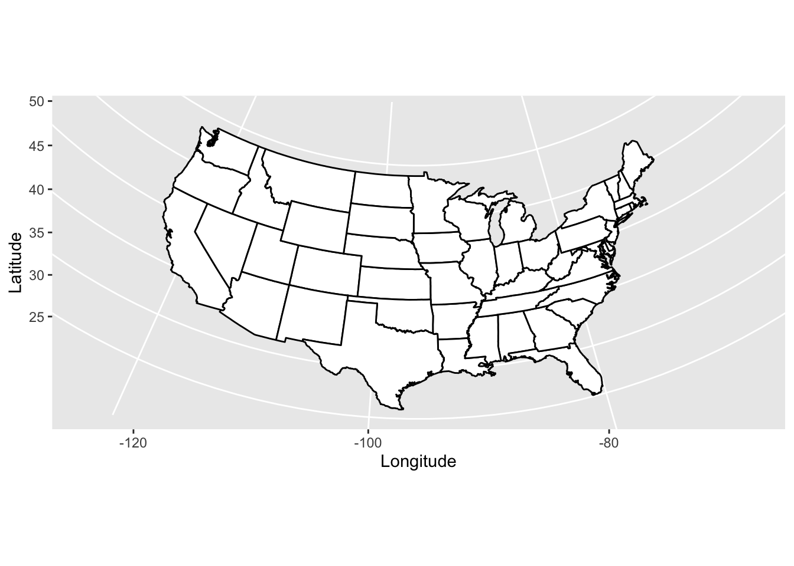
or any other projection available listed in the mapproject() function.
32.2 Coordinate Systems
In R, we typically are dealing with a combination of data that we’ve collected and that we’ve attained from some other provider. In most GIS applications, the coordinate systems we encounter are either:
- UTM (Universal Transverse Mercator) measuring the distance from the prime meridian for the x-coordinate and the distance from the equator (often called northing in the northern hemisphere) for the y-coordinate. These distances are in meters and the globe is divided into 60 zones, each of which is 6 degrees in width. Geographic coordinate systems use longitude and latitude. For historical purposes these are unfortunately reported in degrees, minutes, seconds, a temporal abstraction that is both annoying and a waste of time (IMHO).
- Decimal degrees, while less easy to remember, are easier to work with in R.
- State Planar coordinate systems are coordinate systems that each US State has defined for their own purposes. They are based upon some arbitrarily defined points of reference and another pain to use (IMHO). Given the differential in state area, some states are also divided into different zones. Maps you get from municipal agencies may be in this coordinate system. If your study straddles different zones or even state lines, you have some work ahead of you…
It is best to use a system that is designed for your kind of work. Do not, for example, use a state plane system outside of that state as you have bias associated with the distance away from the origin. That said, Longitude/Latitude (decimal degrees) and UTM systems are probably the easiest to work with in R.
In R, we use rgdal to project points. Here I load in the coordinates of the populations in the Arapatus attenuatus data set and make a SpatialPoints object out of it. Setting the proj4string() here does not project the data, I am just specifying that the data are already in the lat/long WGS84 format.
library(sp)
library(gstudio)
data(arapat)
coords <- strata_coordinates( arapat )
pts <- SpatialPoints( coords[,2:3] )
proj4string(pts) <- CRS("+proj=longlat +datum=WGS84 +no_defs +ellps=WGS84 +towgs84=0,0,0")
ptsclass : SpatialPoints
features : 39
extent : -114.2935, -109.1263, 23.0757, 29.32541 (xmin, xmax, ymin, ymax)
crs : +proj=longlat +ellps=WGS84 +towgs84=0,0,0,0,0,0,0 +no_defs The CRS() function holds the definition of the projection and interfaces between the PROJ.4 and RGDAL libraries. To project a set of data points into a new coordinate systems, we use spTransform() and pass it the definition of the new system to use.
32.2.1 Changing Datum
We will first begin by looking at differences in the actual datum used to record the loation of plots. Here I compare the decimal Longitude/Latitude we’ve used thus far with that from the Universal Transverse Mercator (UTM).
pts.utm <- spTransform(pts, CRS("+proj=utm +zone=12 +datum=WGS84"))
summary( pts.utm )Object of class SpatialPointsDataFrame
Coordinates:
min max
coords.x1 180128 686925.2
coords.x2 2552540 3248545.0
Is projected: TRUE
proj4string :
[+proj=utm +zone=12 +datum=WGS84 +units=m +no_defs]
Number of points: 39You can see the tranformations in the coordinate system by comparing the plots below. The relative position of each point is the same.